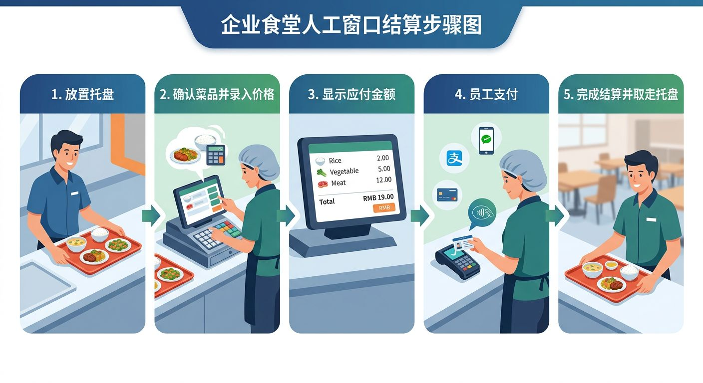
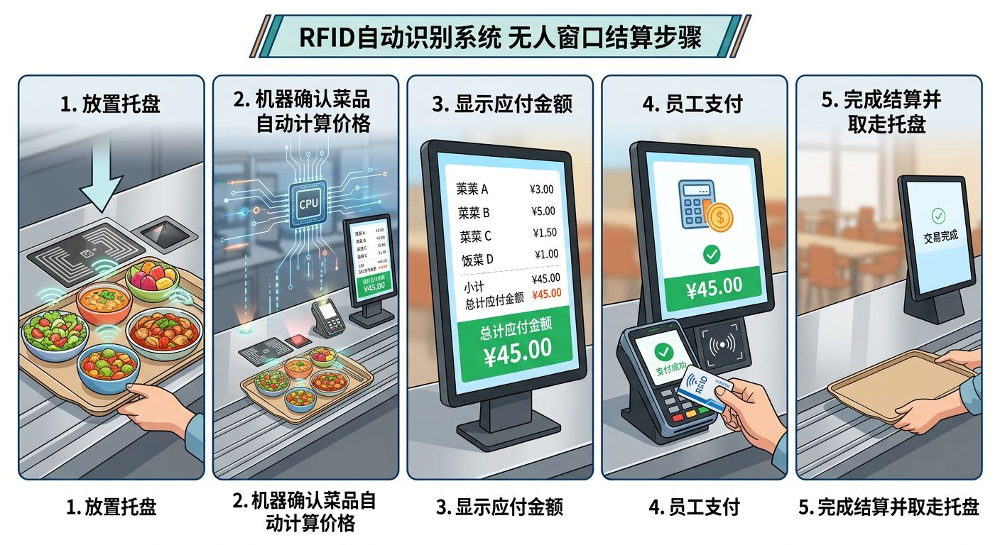
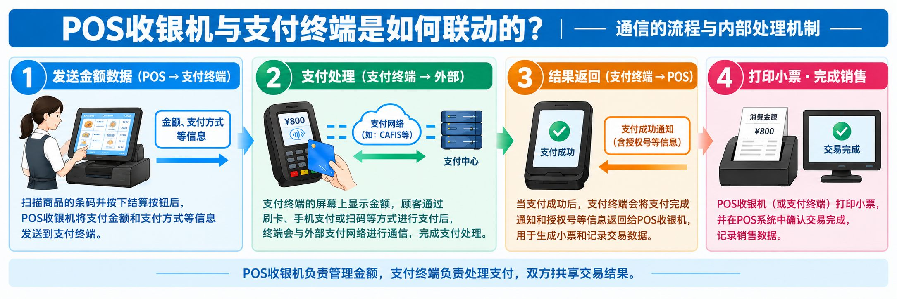
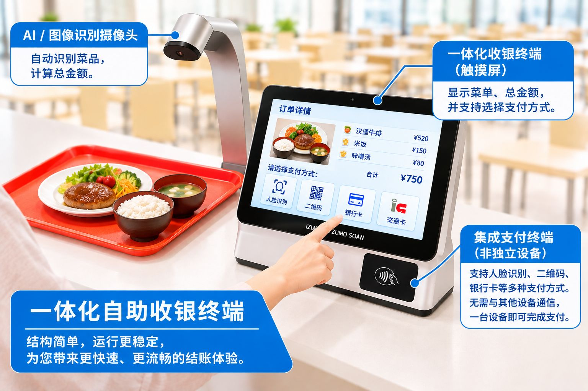

本文要点
- 有人收银、普通自动结算机、收银支付一体化自动结算机的结算流程与区别
- 普通自动结算机容易被忽视的"设备间通信·系统联动"课题
- 在通信故障时也更易持续结算的设计思路
- 降低支付手续费负担的选项（预付、公司内账户、工资扣除）
在企业食堂和大学食堂，午餐时段用餐者集中，收银等待时间可能变长。自动结算机通过自动计算菜品金额，提升结算效率，缩短用餐者的等待时间。
然而，自动结算机的性能并非仅由菜品识别速度决定。收银终端与支付终端的联动方式、对通信故障的应对、支付手续费等，也会对食堂运营产生很大影响。
本文将比较有人收银、普通自动结算机，以及我们提供的收银·支付一体化自动结算机的运作机制，并解析各自的特点。
1. 有人收银的机制
要点：有人收银是由收银员目视确认菜品、输入金额，并在支付终端处理付款的方式。虽然可靠，但在午间高峰时容易出现排队和输入错误。
在有人收银中，收银员确认菜品、输入金额并完成结算。

结算流程
- 用餐者将装有菜品的托盘放到收银台上。
- 收银员确认菜品种类，在POS收银机中输入各菜品金额。
- POS画面显示合计金额。收银员向用餐者确认支付方式，必要时在支付终端输入金额。
- 用餐者使用刷卡或二维码等方式付款。
- 结算完成后，用餐者取回托盘并前往座位。
这种方式由人工确认菜品并输入金额，因此在用餐者较多的时段容易出现排队。此外，输入错误和收银员的工作负担也是课题。
2. 普通自动结算机的机制
要点：普通自动结算机通过RFID或AI图像识别自动识别菜品并计算金额，由收银POS、联动用PC、支付终端相互通信完成结算。识别虽快，但设备间通信和外部服务器联动增多，存在通信故障时结算中断的风险。
普通自动结算机利用RFID或AI图像识别等技术，自动计算菜品的种类和金额。

结算流程
- 用餐者将装有菜品的托盘放到收银台上。
- 通过RFID或AI图像识别来识别菜品，并根据登记价格计算合计金额。在识别条件满足时，也有系统能在约1秒内算出金额。
- 收银POS画面显示合计金额。收银侧系统将本次结算数据发送到另一台PC等，并联动支付处理所需的金额和订单信息。
- 用餐者选择刷卡或二维码等支付方式。金额信息从PC发送到支付终端，支付终端与支付公司的服务器等通信以处理支付。支付结果从支付终端返回PC，更新订单数据的支付状态。
- 支付完成后，用餐者取回托盘并前往座位。
容易被忽视的课题：设备间通信与系统联动
普通自动结算机可能采用菜品识别装置、收银POS、联动用PC、支付终端等多台设备和系统联动运作的配置。

在这种配置下，设备之间的通信以及与外部服务器的通信能否正常运作非常重要。

POS收银机与支付终端的联动机制，理解以下3点就会更清晰。
- POS收银机计算结算金额，并向支付终端发送必要信息。
- 支付终端与支付服务通信，接收付款审批结果。
- 将支付结果返回POS收银机，使结算与销售记录联动。
例如，若从收银机向PC发送订单数据，或从PC向支付终端联动金额时发生故障，可能导致结算停止，或确认支付结果耗时。
此外，即使支付本身成功，若结果未正确反映到收银侧，也可能需要进行与销售数据的核对、重复支付的确认等额外处理。
实际上，某食堂过去曾两次因通信故障而无法正常结算，运营方不得不自行承担无法结算的金额。
从这些案例也可以看出，对食堂自动结算机而言，不仅是处理速度，发生通信故障时的持续运营和恢复方法同样重要。
3. 我们提供的自动结算机机制：将收银终端与支付终端一体化
要点：我们的自动结算机将收银功能与支付功能整合到一台终端，省去PC与支付终端之间的金额联动。由此配置更简洁，更易于在通信故障时持续结算，并优化支付成本。
我们的自动结算机采用将收银功能与支付功能整合到同一台终端的配置。

我们的RFID式·AI式产品全部按照将POS收银机与支付终端一体化来设计。
通过省去普通配置所需的收银侧PC与独立支付终端之间的金额联动，使系统配置更简洁，并致力于提升稳定性。

结算流程
- 用餐者将装有菜品的托盘放到收银台上。
- 通过RFID或AI图像识别来识别菜品并自动计算合计金额。在识别条件满足时，可在约1秒内算出金额。
- 收银POS画面显示合计金额，用餐者选择支付方式。
- 用餐者使用人脸识别、二维码、刷卡等系统支持的方式付款。由于收银与支付处理在同一台终端内执行，无需在另一台PC与支付终端之间联动金额信息。订单数据和支付结果在终端内记录并发送至服务器。即使与服务器的通信暂时中断，也可将待发送数据保留在终端内，并在通信恢复后自动发送。
- 结算完成后，用餐者取回托盘并前往座位。
支持的支付方式：人脸识别·二维码·刷卡
我们的RFID式·AI式自动结算机在终端内置了人脸识别、二维码、刷卡三种支付方式。可配合食堂的运营，组合预付、公司内账户等方式。

- 人脸识别
- 二维码
- 刷卡
特点1：在通信故障时也能持续结算的设计
在我们的系统中，通过在终端内完成收银与支付处理，即使与外部服务器的通信暂时停止，也能采用在终端内持续相应处理的设计。
结算数据保存在终端内，待通信恢复后再发送至服务器。由此，即使发生暂时的网络故障，也能降低因数据等待发送而使整个结算业务立即停止的风险。
不过，通信故障时可用的支付方式因支付方式和设置而异。需要外部支付公司审批的信用卡和二维码支付等，可能仍需通信。要在离线时持续结算，适当设计预付方式、公司内账户方式等无需通信即可处理的机制非常重要。
特点2：让收银与支付的联动更简洁
当收银终端与支付终端分离时，需要在两者之间交换金额和支付结果的机制。
在我们的一体化系统中，可以省去这种设备间的通信处理。
通过减少设备间的联动环节，减少连接故障的诱因，并简化维护和故障应对。
特点3：降低支付手续费负担的选项
在普通无现金支付中，会根据支付服务的合同条件向食堂运营方收取支付手续费。当支付手续费率约为3%时，视销售规模可能成为不可忽视的成本。
例如，若年度无现金支付销售额为5,000万日元、手续费率为3%，则年度手续费为150万日元。
在我们的系统中，通过将支付功能嵌入自家产品，也可考虑不依赖普通外部支付服务的运营方式。
例如以下方式：
- 预付方式： 从用餐者事先充值的余额中扣除餐费。
- 公司内账户方式： 与用餐者的员工ID或账户绑定来管理使用金额。
- 工资扣除方式： 汇总在食堂的使用金额，并与公司的工资扣除等机制联动。
若适当引入这些方式，有可能降低对外部支付服务的使用频率和手续费负担。需要注意的是，实际的成本削减效果因支付方式、运营费用、系统导入费用等而异。
4. 我们为何将收银终端与支付终端一体化
要点：一体化的目的有两点。(1)省去设备间通信以提升结算处理的稳定性；(2)减少对外部支付服务的依赖，降低食堂运营方的支付成本与运营负担。
我们采用一体化配置的理由主要有两点。
理由1：为了提升结算处理的稳定性
在食堂自动结算机中，需要在午休等有限的时间内处理大量用餐者。
因此，不仅要快速识别菜品，确保结算处理中途不停止也同样重要。
将收银终端与支付终端一体化，可省去两者之间交换金额信息和支付结果的通信。此外，通过结合终端内的数据保存与通信恢复后的重发，可提升对网络故障的应对能力。
我们的目标不只是让结算自动化，而是打造能让食堂稳定运营的机制。
理由2：为了降低食堂运营方的支付成本与运营负担
使用外部支付服务时，可能产生支付手续费和伴随服务合同的费用。此外，依赖特定支付运营商的配置，还需为服务停止或合同条件变更等情况做好对策。
将支付功能嵌入自家终端，并可选择预付或公司内账户等方式，就能构建适合食堂运营的支付环境。
不过，即使不使用外部支付服务，余额管理、防范滥用、结算管理、系统维护等仍然必要。应在比较各支付方式的成本与运营条件后，选择最合适的配置。
5. 总结：迈向不仅快速而且不易中断的自动结算机
要点：选择食堂自动结算机时，重要的是不仅比较菜品识别速度，还要从包含通信故障应对、支付成本、易用性在内的整个系统来比较。下表比较普通自动结算机与一体化类型。
选择食堂自动结算机时，不仅要关注菜品识别速度，还需关注整个系统的配置。
| 比较项目 | 普通自动结算机 | 我们的一体化自动结算机 |
|---|---|---|
| 菜品金额计算 | 用RFID·AI等自动计算 | 用RFID·AI等自动计算 |
| 收银与支付的配置 | 存在联动独立终端·独立PC的配置 | 收银功能与支付功能整合到同一台终端 |
| 设备间金额联动 | 视配置而需要 | 收银终端与支付终端之间无需联动 |
| 通信故障应对 | 取决于系统配置和设置 | 支持终端内保存与恢复后重发 |
| 支付方式 | 外部支付服务等 | 人脸识别·二维码·刷卡·预付等，视配置支持 |
| 支付成本 | 取决于所签约的支付服务等 | 也可选择不依赖外部支付的方式 |
未来的食堂系统所需要的，不只是让结算更快。包括通信故障的应对、运营成本的优化、以及对用餐者而言的易用性在内，改善食堂的整体业务同样重要。
我们通过将收银终端与支付终端一体化的智能食堂自动结算机，助力企业食堂和大学食堂缩短等待时间、实现稳定的食堂运营。
IZUMO SOAN —— 让食堂结算更快、更简洁。